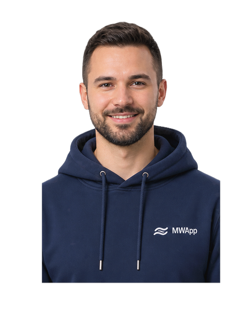
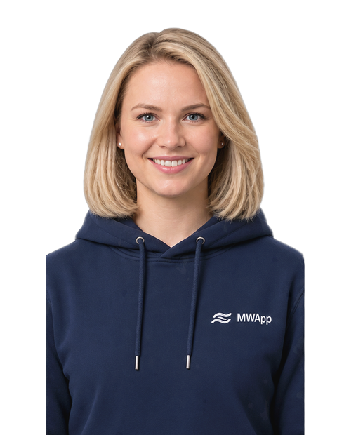
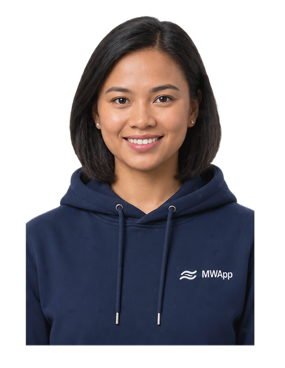

Прогрессивное веб-приложение, которое превращает «с чего вообще начать» в живой личный гид по каждому порту — без установки, без регистрации, доступно, как только появится связь.
MWApp — флагманский продукт IMWIRSA: прогрессивное веб-приложение (PWA), то есть работает прямо в браузере, без установки из магазина приложений и без создания аккаунта. Откройте его, выберите язык и ассистента — и оно уже знает, в каком вы порту.
Транспорт, центр моряков, медицина, безопасность — информация формируется на основе открытых и партнёрских источников и проходит локальную проверку и актуализацию.
Каждую карточку порта ведёт координатор MWApp, который реально там живёт.
При необходимости ассистент может связать моряка с центральной командой поддержки IMWIRSA.
Потому что сейчас найти реальную помощь в незнакомом порту зависит от везения — кого спросишь, говорит ли он на вашем языке, актуальна ли вообще информация.
Время стоянки судов падает. Моряк с двумя часами на берегу не может позволить себе искать.
Одно приложение, одна логика, куда бы ни зашло судно — а не новая листовка каждый раз.
Английский, русский, турецкий и филиппинский на старте MVP — выбраны по реальной демографии экипажей.
PWA работает мгновенно на любом телефоне, даже через нестабильный wifi порта, без аккаунта в магазине приложений.
У каждой карточки порта есть конкретный координатор с контактом — а не безликая база данных.
Спроектировано на основе собственных исследований IMWIRSA о том, что реально нужно моряку по прибытии.
У каждого пилотного порта есть живая «карточка»: структурированная, всегда актуальная информация по семи категориям, которую ведёт локальный координатор.
Часы работы, услуги, контакты и маршрут до местного центра или миссии.
Выход из порта, шаттлы, такси и общественный транспорт до города.
SIM-карты, обмен валюты, продукты, аптеки — и что реально открыто в 2 часа ночи.
Что доступно пешком от ворот — а если есть время, куда поехать в центр города.
Миссии, капелланы и места для молитвы — для любой веры или без неё.
Местные экстренные номера, администрация порта и контакты профсоюза, проверенные координатором.
Доступны в рамках профсоюзных Premium-программ — включая Wellness Recovery Zone.
При первом запуске моряк выбирает ассистента, который ему ближе. Этот выбор — и только он — формирует весь опыт использования MWApp.
Молодой, нейтральный, располагающий к себе — для широкого интернационального экипажа.

Более старший, уверенный голос для моряков, которым важен привычный, уважительный тон.

Молодой, тёплый женский голос — гид по умолчанию для многих новых пользователей.

Тёплое, знакомое присутствие для самой многочисленной национальной группы моряков в мире.
ИИ-ассистент помогает моряку находить нужную информацию и пользоваться возможностями MWApp, а также запоминает его имя (с согласия) для персонального приветствия при повторных визитах. Если ситуация требует участия человека, через ассистента можно связаться с центральной командой поддержки IMWIRSA. Связь с местным центром моряков, профсоюзом, контактом Spiritual Care, Wellness Host или другой местной службой моряк выбирает и инициирует самостоятельно — через соответствующий раздел MWApp. Сменить ассистента или язык всегда можно в Настройках.
Каждую карточку порта поддерживает актуальной реальный локальный координатор — MWApp Port Coordinator. Регистрация нового порта сегодня проходит через структурированную анкету; для дальнейших обновлений координатор пользуется IMWIRSA MWApp Bot — рабочим каналом между координатором и центральным офисом IMWIRSA, а каждое изменение проверяет редакция перед публикацией.
Структурированная анкета проводит координатора через 10 разделов — его данные, порт и его услуги. Заполняется один раз, чтобы зарегистрировать новую карточку порта.
Как только порт запущен, небольшие поправки и дополнения (часы работы, транспорт, фото, срочное уведомление) координатор отправляет через бота в центральный офис IMWIRSA, где их проверяет редакция — и только после этого они используются для актуализации карточки порта. Заново заполнять всю анкету при каждом изменении не нужно.
Запланировано: сколько моряков посмотрели карточку порта и воспользовались каждой услугой — без отдельного инструмента отчётности.
MWApp запускается как MVP, сфокусированный на том, чтобы сделать основы правильно. Вот что запланировано по мере роста сети.
Новые порты и терминалы подключаются постепенно, по мере формирования надёжной системы локальной проверки информации для каждого из них.
Расширение сети Wellness Zones, постепенное увеличение набора доступных в них услуг и повышение качества обслуживания.
Расширение партнёрской программы Premium и сети скидок/привилегий в торговых сетях и у других локальных партнёров в портах присутствия MWApp.
Premium-возможности MWApp могут предоставляться морякам в рамках программ участвующих профсоюзов. Условия и право доступа определяются соответствующим профсоюзом.
Дополнительные языки могут добавляться по мере роста числа пользователей из соответствующих языковых групп и с учётом запросов участвующих профсоюзов.
Развитие MWApp строится в том числе через участвующие профсоюзы, куда поступает агрегированная информация о пользовании программой и предложения пользователей по её улучшению.